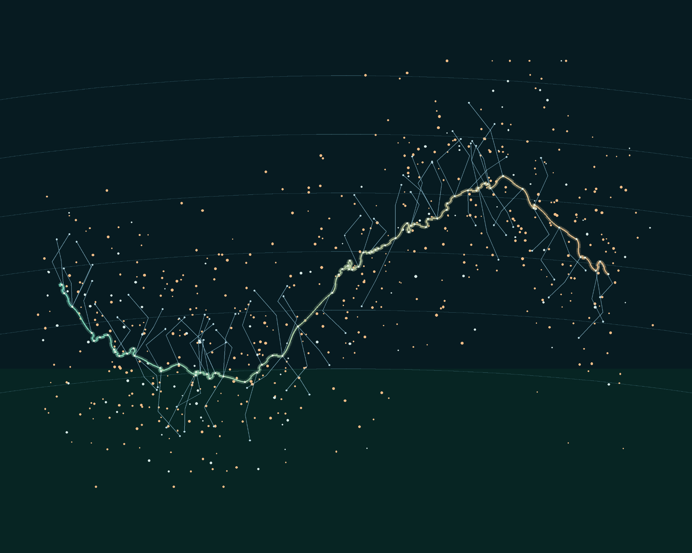
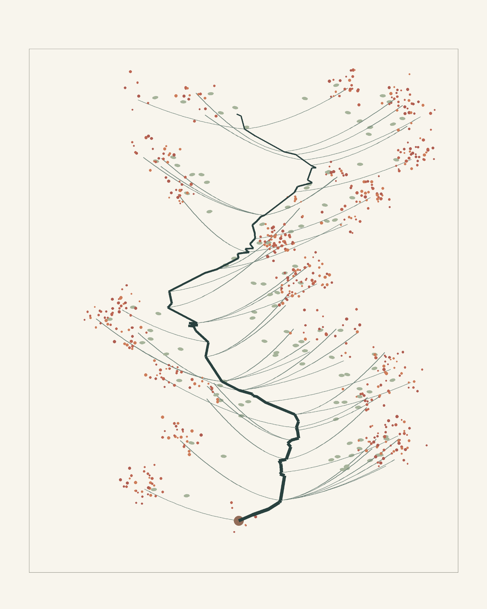
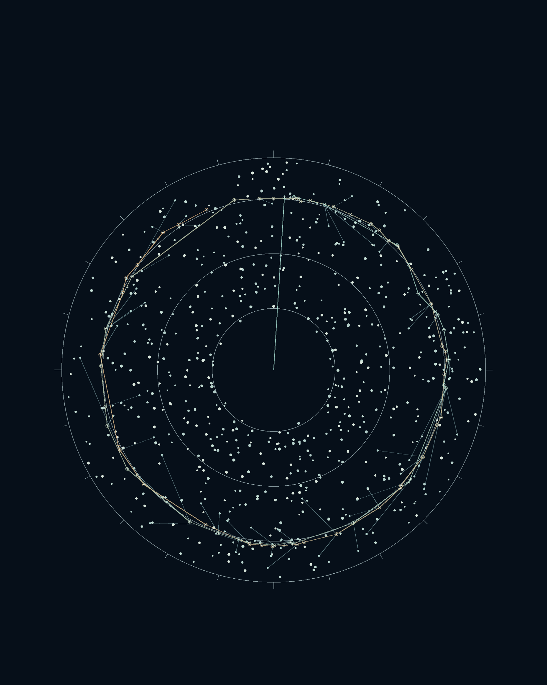
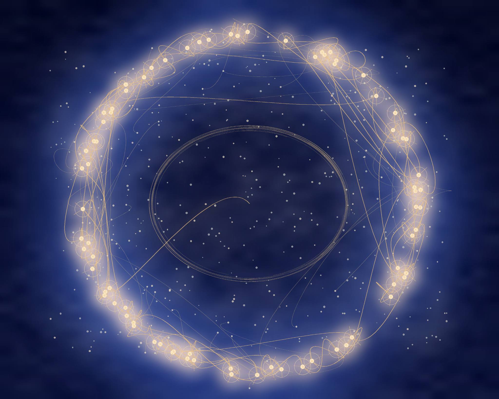
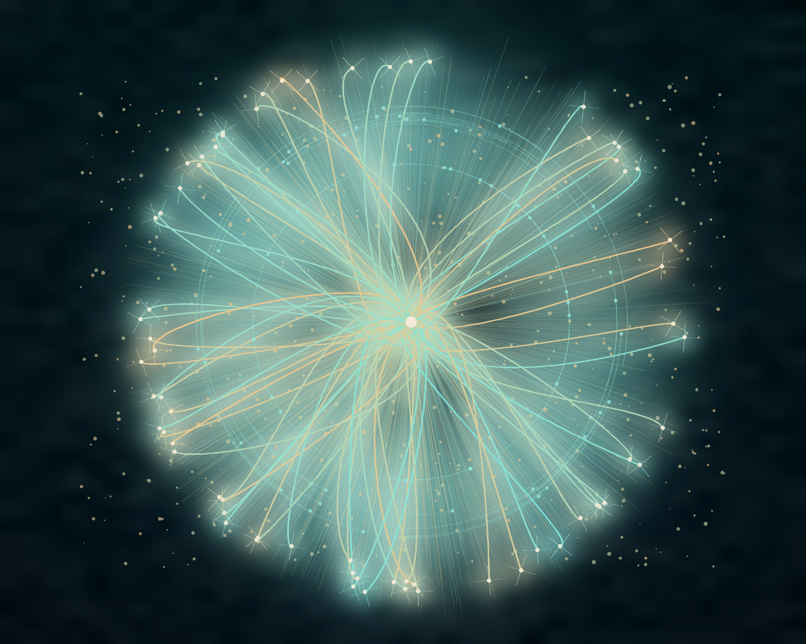

見えないものにも、
物語がある。
今この瞬間も、宇宙から地球へ、目に見えない粒子が届いています。
遠い宇宙から届く粒子は、地球の大気とぶつかることで新たな粒子を生み出し、その一部は地上まで届きます。私たちが気づかないだけで、身近なところでも起きている出来事です。
いつ、どんな信号が届くのか。その一つひとつを正確に予測することはできません。
MUONIQUEは、その時間、その場所で捉えた信号を、色や線、光の重なりへと変えていきます。実際に観測された偶然が、少しずつ作品のかたちをつくっていきます。
ある日、ある時間、ある場所。
それは、誰かが生まれた瞬間かもしれない。大切な人と過ごした時間かもしれない。あるいは、何気ない日常のひとときかもしれません。
宇宙から届いた偶然が、一人ひとりの時間と結びつく。
その一度きりの観測記録を、世界にひとつの作品として残す。
偶然が、作品になる。
同じ時間は、
二度と訪れない。
宇宙から届いた、ある時間、ある場所の記録。その一度きりの出来事が、作品の物語になります。
ある時間
宇宙からの粒子が届いた日時。その瞬間に起きた出来事が作品の出発点になります。
ある場所
宇宙からの粒子が届いた場所。その土地で生まれた記録も、作品を特別なものにします。
届いた信号
実際に捉えた粒子の信号。その時刻や特徴に応じて、線や色、かたちが生まれます。
作品の出自を示す観測記録の標準化と、独占的な商用利用を管理する仕組みは、今後の正式商品化に向けて整備を進める方針です。
宇宙が描く、6つの世界。
粒子の信号から、6つの表現へ。
作品を選んで拡大できます。


Flow
光の流れを、時のかたちに。


Botanica
ひとつの検出から、枝葉が育つ。


Atlas
偶然の到来を、星図に結ぶ。


Celestial Filigree
藍色の空に、金の星と繊細な軌道をつづる。


Radiant Fountain
青緑と金の光線が、中心から幾重にも広がる。

Luminous Flow
青緑から金へ、信号が静かな光の層になる。
掲載しているのは、MUONIQUEの6つのデザインの作品例です。線や星の位置は、粒子の実際の飛跡や入射方向を表すものではありません。
見えない宇宙と、
作品をつくる。
MUONIQUEでは、10分間の観測を通して、宇宙線由来の検出信号とともに作品が育つ様子を楽しめます。
表現を選ぶ
6つのデザインから好みの世界を選びます。あとは粒子の偶然に任せることも、自分の感性を加えることも。
偶然を見守る
粒子の到来とともに、線や光が少しずつ重なっていきます。共作モードでは制作途中に表現を調整することもできます。
作品を持ち帰る
完成した作品は画像と短い制作動画に。粒子の記録とともに、その時間の偶然を作品として残します。
大切な日にも、
大切な場所にも。
今この場で作品をつくるだけでなく、特定の日時や場所で観測された記録を使って作品を届けることも、MUONIQUEが目指す未来です。
あの瞬間を、残す。
生まれた日の時刻。忘れたくない記念日。その瞬間の観測記録から、一点物の作品を。
あの場所を、残す。
大切な場所に検出器を運び、そこで記録された宇宙の出来事から作品を制作する。
その贈り物には、
科学がある。
MUONIQUEの作品を描くのは、想像上の宇宙/粒子ではありません。実際に観測された信号をもとに、独自のプログラムが表現を生み出します。
ミューオンとは？
画像は生成AIでつくっているの？
作品の線は、粒子が通った道なの？
「一点物」とはどういう意味？
お問い合わせ
まだ見たことのない、
あなたの時間に出会う。
宇宙からの出来事を、アートとして残す。
展示・体験イベントへの出展、施設での体験企画などについて、ご相談をお待ちしています。